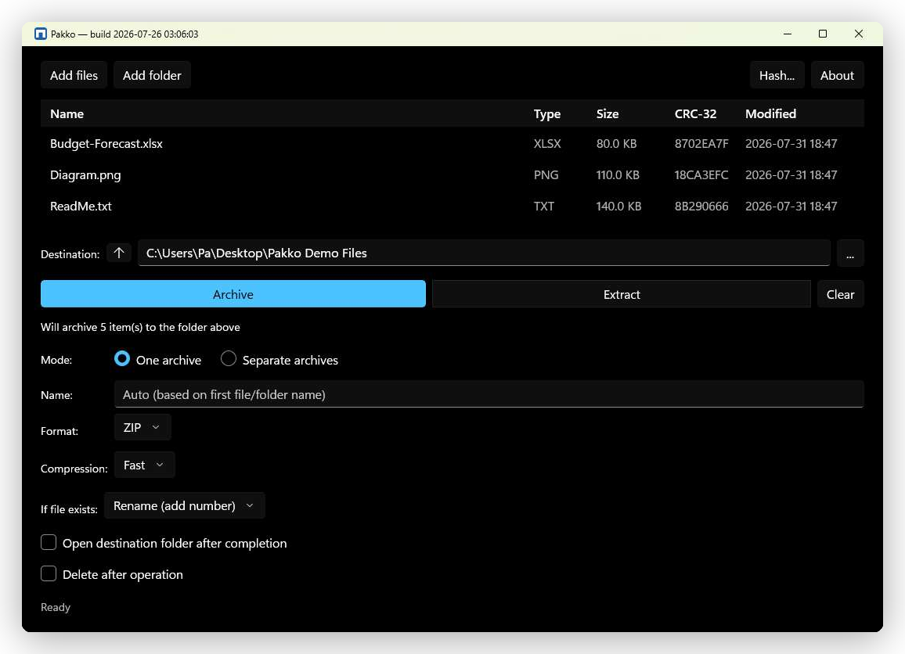

Open-source Windows archiver
A ZIP tool with nothing to hide.
Pakko extracts and creates ZIP, TAR, RAR, and 7-Zip archives using only Windows' own
compression APIs and its built-in, sandboxed tar.exe — no 7-Zip, no
WinRAR, no third-party compression code anywhere in the app.
Built for engineers auditing their supply chain, security researchers, and anyone who'd rather not trust an archiver they can't read the source of.

The app itself — no mockup. Same build, same UI, running on Windows 11.
The trust model
Why not 7-Zip or WinRAR?
Both are capable tools — this isn't a claim of security superiority. It's a different
set of supply-chain dependencies. Pakko's entire compression stack is either part of
the .NET runtime or Microsoft's own signed tar.exe: components with a
public CVE process, reproducible builds, and a community audit trail that some
security-conscious environments — government, defense, regulated industries — require
and everyone else can still benefit from.
Minimal attack surface
Compression runs through System.IO.Compression — no vendored 7-Zip, WinRAR, or libarchive code linked into the app.
Sandboxed extraction
RAR, 7-Zip, and TAR archives are read via Windows' signed tar.exe, launched inside an AppContainer with no network capability and a Job Object process limit.
Nothing phones home
No telemetry, no analytics, no crash reporting, no update checks. Pakko makes zero network requests — and so does this page.
Open to audit
Apache-2.0, full source on GitHub. Every claim here is something you can verify in the code, not take on faith.
What's built
What's implemented
Nothing below is aspirational — every item has shipped and been verified against the real Windows shell, not just a test suite.
Formats
- ✓ZIP — read & write, via
System.IO.Compression - ✓TAR / GZ / BZ2 / XZ / ZST / LZMA — read & write, via
tar.exe - ✓RAR — read only, via
tar.exe - ✓7-Zip — read only, via
tar.exe
Windows integration
- ✓Native right-click menu — Extract, Add to archive, Test archive
- ✓File-type association — opens straight into the Archive Browser
- ✓Archive Browser — navigate, extract a selection, preview files
- ✓Mark-of-the-Web propagated to every extracted file
- ✓Group Policy / ADMX administrative controls
Command line
- ✓
pakko.exe— standalone, self-contained, no install - ✓7-Zip-familiar commands —
a/x/t/l - ✓Every release ships a
SHA256SUMSfile
Get it
Download
Two independent builds, both from the same GitHub Release — pick the one you need.
GUI app (MSIX)
Right-click Explorer integration, Archive Browser, system tray. Windows 10 1809+ or Windows 11.
Available on the Microsoft Store — no certificate trust step needed. A GitHub Release build (signed with a development certificate) remains available for anyone who prefers it or is outside Store-supported regions.
Command line (pakko.exe)
Self-contained, no installer, no admin rights. pakko x archive.7z -o .\out
Same 7-Zip-familiar commands shown above. See the full command reference.